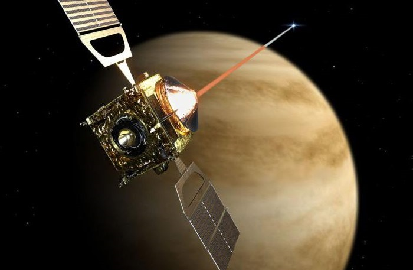
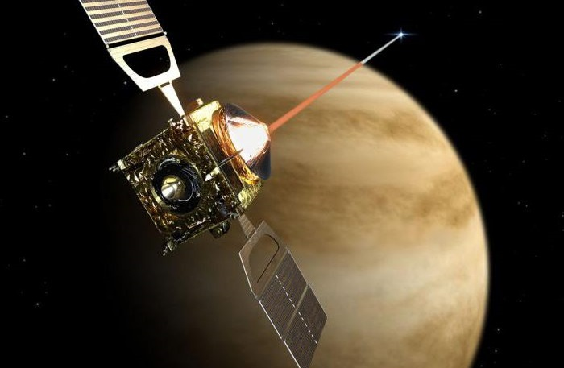
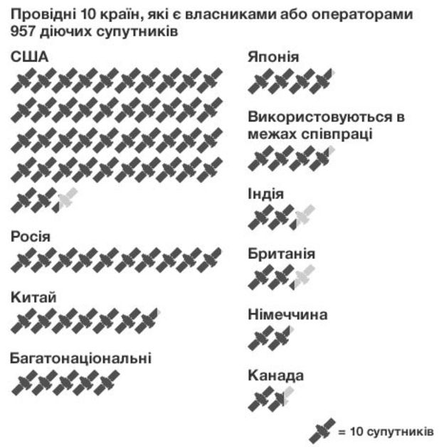
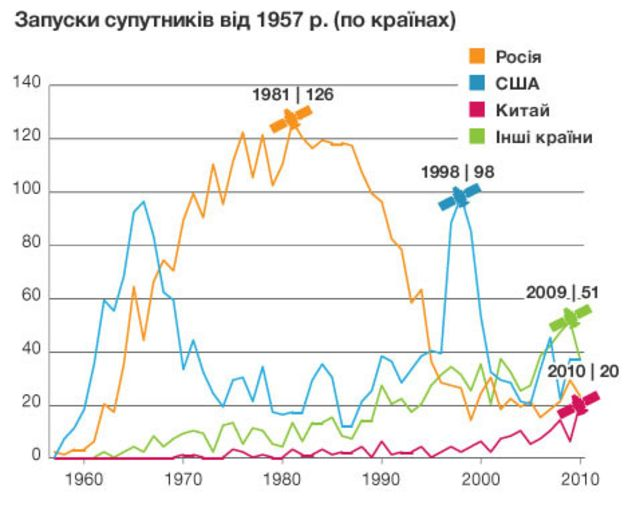
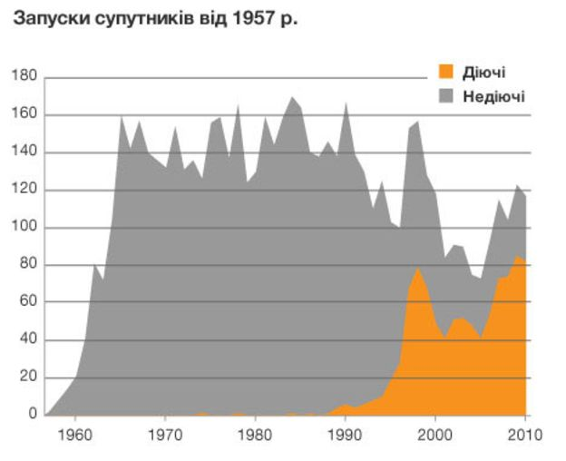
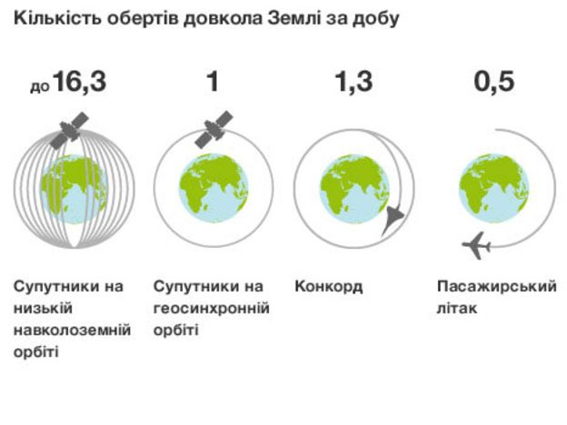

Мрас
Про Марс
Марс - четверта за віддаленості від Сонця і сьома за розмірами планета Сонячної системи; маса планети становить 10,7% маси Землі. Названа на честь Марса - давньоримського бога війни, відповідного давньогрецького Аресові.
Іноді Марс називають «червоною планетою» через червонуватого відтінку поверхні, придаваемого їй мінералом маггеміта - γ-оксидом заліза (III). Марс - планета земної групи з розрідженою атмосферою (тиск у поверхні в 160 разів менше земного) Особливістю поверхневого рельєфу Марса можна вважати ударні кратери на зразок місячних, а також вулкани, долини, пустелі і полярні льодовикові шапки на зразок земних.
Марс — планета земного типу з розрідженою атмосферою. На Марсі є метеоритні кратери, як на Місяці, вулкани, долини і пустелі, подібні до земних. Тут розташована гора Олімп (22 456 м), найвища відома гора в Сонячній системі, і Долини Марінера — величезна рифтоподібна система каньйонів. На додаток до особливостей — період обертання Марса і сезонні цикли також подібні до земних.
Марс — невелика планета, більша за Меркурій, але майже вдвічі менша від Землі за діаметром. Марс має екваторіальний радіус 3396 км і середній полярний радіус 3379 км (обидва значення точно визначені космічним апаратом «Mars Global Surveyor», який почав свою місію на орбіті навколо планети 1999 року). Маса Марса становить 6,418×1023 кг, що вдесятеро менше за масу Землі, а прискорення вільного падіння на його поверхні — 3,72 м/с². Це означає, що обʼєкти на Марсі важать лише третину своєї земної ваги.
Марс має криваво-червоний колір, яким він завдячує мінералу Маґгеміту — γ-оксиду заліза(III). Через цей колір його іноді називають Червоною планетою. Марс довго асоціювали з війною і кровопролиттям, і тому його назвали на честь римського бога війни. У планети є два супутники, Фобос (грец. «Страх») і Деймос («Жах»), які були названі на честь двох синів Ареса і Афродіти (римські варіанти назв — Марс і Венера відповідно).
Марс зараз

Наразі немає наукових доказів існування життя на Марсі. Хоча припускають, що воно там може бути. Ще до початку польотів на Марс він був першим кандидатом на виявлення там позаземного життя. На Марсі було знайдено зразки льоду, що є однією з умов існування життя. За останніми відомостями, в минулому на Марсі існувала вода в рідкому стані, поверхню планети вкривали моря. Однак внаслідок нез'ясованих досі причин вона практично зникла. Цілком можливо, що ще кілька мільйонів років тому клімат на Марсі був вологішим. Доказом цього слугує рельєф планети. Одна з версій втрати Марсом води — це результат дії сонячного вітру.
Група геофізиків з Канади і США пояснила наявність у давнину рідкої води на поверхні Марса. На думку фахівців, для цього необхідна тепла і щільна газова оболонка, яка забезпечувалася викидами з літосфери в гідросферу метану. За словами вчених, періоди потепління були пов'язані з надходженням парникового газу і тривали близько мільйона років.
Освоєння
 

Без захисного спорядження людина не зможе вижити на поверхні Марса й декількох хвилин. Однак, у порівнянні із умовами на спекотних Меркурії та Венері, холодних зовнішніх планетах та позбавлених атмосфери Місяці та астероїдах, умови на Марсі видаються придатнішими для освоєння планети людиною. На Землі є місця, у яких природні умови багато у чому схожі на марсіанські.
Атмосферний тиск на висоті 34668 метрів — рекордна за висотою точка, якої досягла повітряна куля із командою на борту (травень 1961 р.) — приблизно відповідає тиску на поверхні Марса.
Вкрай низькі температури в Арктиці та Антарктиді рівні середній температурі на Марсі (−46 °C). Також на Землі є пустелі, зовні схожі із марсіанським ландшафтом.
Колонізація
Хто має найбільше супутників?

Перший штучний супутник Землі запустили в СРСР 1957 року. Відтоді в космос запущено понад 6000 супутників. Супутники відіграють дедалі важливішу роль для життя на Землі: їх використовують для зв’язку, навігації, безпеки, розваг, але найголовніше те, що вони дозволяють нам по-новому поглянути на нашу планету.
423 із загальної кількості діючих 957 супутників на орбіті належать США. Далі за кількістю супутників іде Росія. Китай також посідає провідне місце на Земній орбіті. Принаймні 115 країн є власниками частки супутників. На цій схемі вказано країни, де базуються власники або оператори супутників.
44 країни світу є співвласниками супутників і співпрацюють у їхньому запуску та управлінні (здебільшого, це групи з двох-трьох країн). Тут вони вказані як спільні проекти. США, Тайвань, Японія і Франція – найактивніші учасники проектів космічної співпраці.
Переповнений космос - історія запусків

В 1957 році СРСР перший у світі запустив у космос штучний супутник Землі. Відтоді на орбіту було запущено понад 6000 супутників. Ця схема показує динаміку запусків супутників від 1957 року, які здійснювали СРСР (і згодом Росія), КНР та інші країни. У рік, коли запуски досягли верхівки для країни, поставлено символ супутника.
Для СРСР це були 1970-1980 рр., що стали періодом розквіту радянської військово-космічної програми, коли переважали супутники розвідки, навігації і зв’язку.
Для США пік запусків настав у 1998 році: саме тоді почалося створення трьох комерційних мереж супутникового зв’язку - Globalstar, Iridium и ORBCOM. Багато з тих супутників були запущені за допомогою американських ракет-носіїв, подекуди по кілька супутників на одній ракеті.
Загалом пік запусків супутників можна пояснити змінами в їхньому призначенні. В 1970-ті виникла гостра потреба в супутниках зв’язку. В 1990-ті – в навігаційних супутниках, а в попереднє десятиліття – в цивільних і науково-дослідних супутниках.
Якщо ця тенденція триватиме, то космічні держави, можливо, будуватимуть більші і витриваліші супутники, а міжнародні цивільні інститутути, такі як університети, зможуть взятися за виготовлення малих дешевших супутників.
Засмічений космос - недіючі супутники

Верхня частина цієї схеми показує загальну кількість супутників, запущених між 1957 і 2010 роками. Сіра зона – це супутники, які вже не діють, оранжева – це супутники, які досі експлуатуються.
Найстаріший з діючих супутників на орбіті - Amsat-Oscar 7, запущений з бази військово-повітряних сил США Ванденберг у Каліфорнії 15 листопада 1974 року. Він перебуває на низькій навколоземній орбіті і використовується, головно, радіоаматорами.
Сіра зона - це 5428 супутників. Багато з недіючих апаратів перетворилися на частину орбітального сміття. Згідно з підрахунками НАСА, на довколаземній орбіті перебувають біля 19 тисяч предметів завбільшки понад 10 см.
Національні пріоритети

На цій схемі супутники виокремлено в чотири групи за головними власниками/операторами – це США, Росія, КНР і інші країни (супутники спільної власності і співпраці не враховані). З неї випливає, що призначення супутників залежить від економічного та політичного клімату в різних частинах світу.
Призначення (комерційне, урядове, військове чи цивільне) засвідчує головного користувача супутника, але важливо зауважити, що багато супутників мають багатоцільове використання. Наприклад, супутник може одночасно мати комерційне і військове застосування.
Комерційні супутники є власністю окремих компаній і синдикатів, які фінансуються інвесторами, а також приватних груп. Супутники використовуються для зв’язку і мовлення. Військові супутники часто використовують для розвідки, навігації і радіозв’язку. Урядові призначені для метеоролічних і наукових спостережень. Цивільні користувачі – це академічні установи чи групи науковців-аматорів.
Майже дві третини діючих супутників використовуються для комунікацій. Супутники навігаційні, розвідувальні, метеорологічні, астрофізичні і геодослідницькі складають від 5 до 7% загальної кількості супутників.
Довкола світу за 80 хвилин

Ця схема показує, скільки часу супутникам забирає здійснити повний оберт довкола Землі. Супутники на низькій навколоземній орбіті (ННО) – на висоті від 80 до 1700 км – кружляють довкола планети зі швидкістю в 30 разів вищою, ніж авіалайнер. Такий супутник облітає планету за 88 хвилин.
Супутники ННО складають майже половину від загальної кількості діючих. Їх використовують для розвідки, наукових спостережень і фотозйомок поверхні Землі.